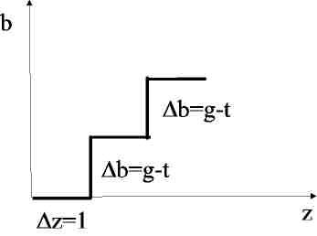
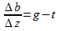
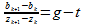
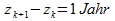
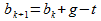
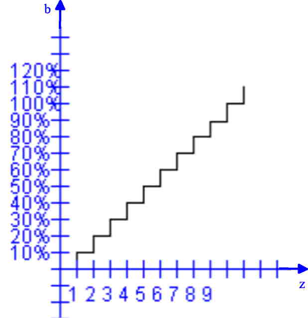
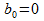
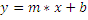

In der folgenden Animation unten, wird das Staatsdefizit als Füllstand eines Beckens dargestellt. Von links kommen zwei Editierfelder, die mit einem Pfeil zu dem Becken zeigt. Das linke Editierfeld ist f´ür die Staatsausgaben (g) und das rechte für die Einahmen (t). In dem Editierfeld unter der Füllstandsanzeige wird die Staatsschuld dargestellt. Wenn die Schuld negativ ist bzw ein Guthaben vorhanden ist, dann ist die Anzeige grün.. Mit dem Button Jahr wird ein Jahr berechnet. Mit dem Button 60 Jahre wird 60 Jahre lang berechnet. Mit dem Button 60 Schritte Jahre werden die Schritte animiert und automatisch berechnet. In dem Diagramm unten sind die Staatsschulden über der Zeit aufgetragen. Wenn die Ausgaben (g) die Einahmen (t) überschreiten, steigt die Staatsschuld (b). In der folgenden Animation wird ein Modell ohne Zinsen simuliert. Wenn keine Änderung der Einkünfte vorhanden ist, ändert sich die Staatschulden nicht. Bei einem Modell mit zinsen, ändert sich der Schuldenstand ohne das Gelder zugeführt werden.
| g | Staatsausgaben | t | Netto-Transfereinnahmen |
| b | Staatsschuld | g-t | Primärdefizit |
In der folgenden Tabelle sind einige Vorschläge, welche Parameter eingetragen werden können. Nachdem mit diesen Werten simuliert wurde, kann das Ergebnis eingetragen werden.
| g | t | b | Ergebnis Steigung Geraden |
| 46 | 44 | 0 | |
| 46 | 48 | 0 | |
| 48 | 46 | 25 | |
| 46 | 48 | 25 |
Im folgenden ist eine Treppe dargestellt. Die Differenz der Zeit (z) beträgt ein Jahr. Die Änderung der Staatschulden (b) ist das Primärdefizit (g-t).
Die Steigung der Geraden/Treppe ist g-t.
Die Differenzengeleichung ergibt sich.
Die Zeitdifferenz ist ein Jahr..
Die Höhe der "Treppenstufen" ist das Primärdefizit (g-t).
Der neue Wert ergibt sich aus dem alten mit der Addition der Steigung (g-t)
Der Vergleich zwischen den Ergebnissen der Simulation und der Rechnung per Hand wurden mit folgenden Parametern gemacht.
| g=11 | t=1 | b0=0 |
In der Simulation wurden die Werte errechnet. Diese kann man dann mit den von Hand gferechneten Werten verglichen werden.
Die ersten Werte werden von Hand gerechnet:
Die Treppe kann man auch als eine Gerade beschreiben. y ist b; m ist (g-t); x ist z(Jahre); b ist b(0):
